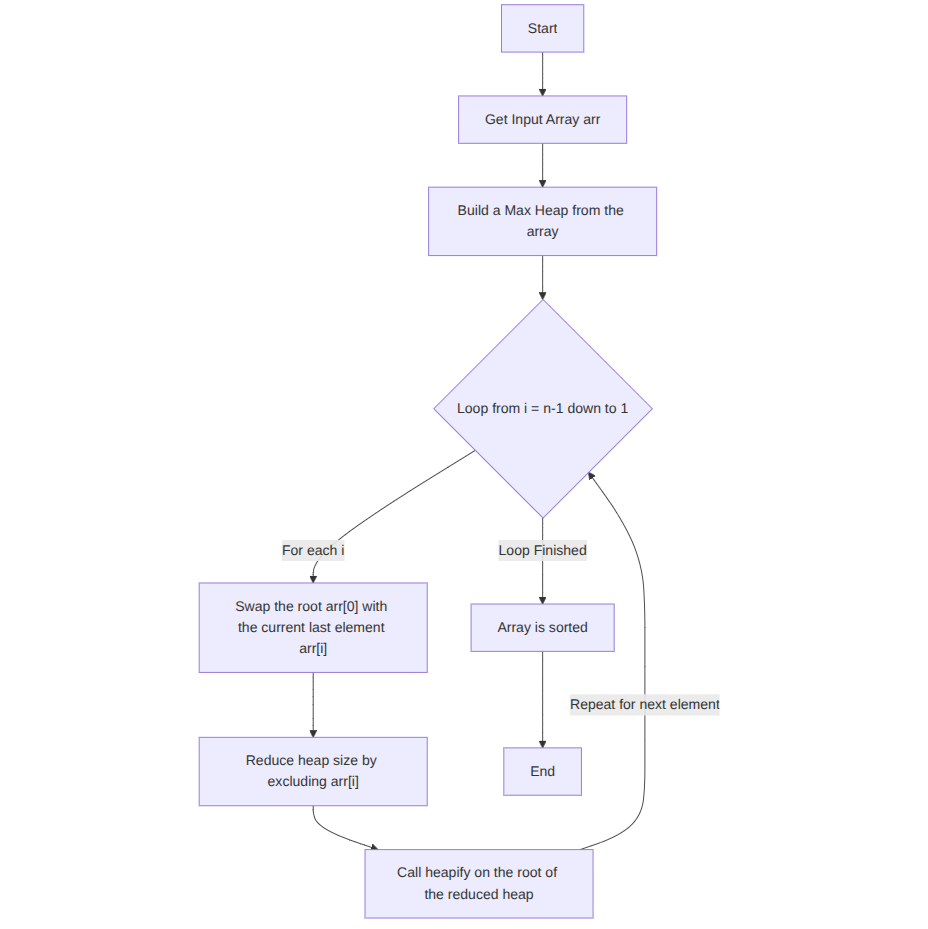
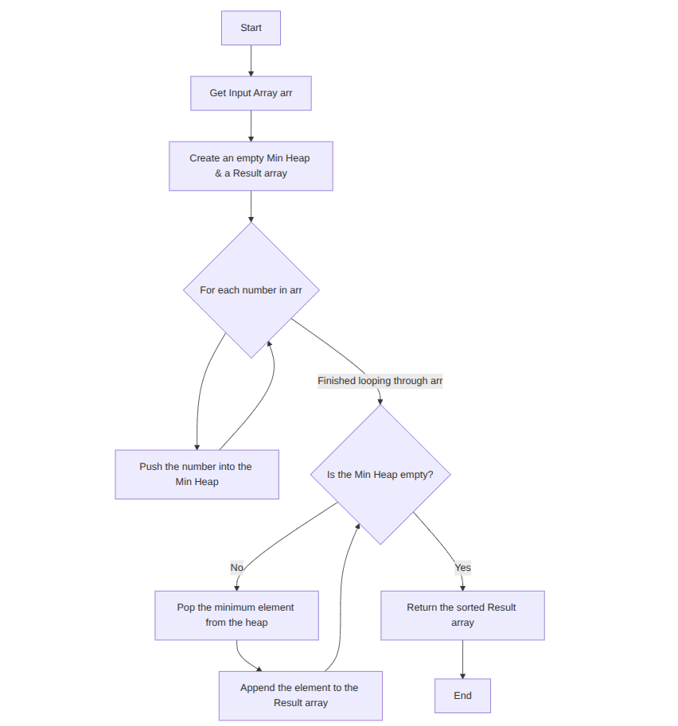

Heap Sort
Problem Statement
Sort an array using Heap data structure.
Example: Input: [4,10,3,5,1] → Output: [1,3,4,5,10]
Approach 1: Build Max Heap & Extract
Explanation: Convert array to max heap and repeatedly
extract max to sort.
Time Complexity: O(n log n)
Space Complexity: O(1)
build max heap from array
for i = n-1 down to 1:
swap root with arr[i]
heapify(arr, 0, i)
return arr

Approach 2: Using Min Heap (Extra Space)
Explanation: Push all elements into min-heap and pop
to get sorted order.
Time Complexity: O(n log n)
Space Complexity: O(n)
create min-heap
for num in arr:
push num into heap
while heap not empty:
pop element into result
return result
